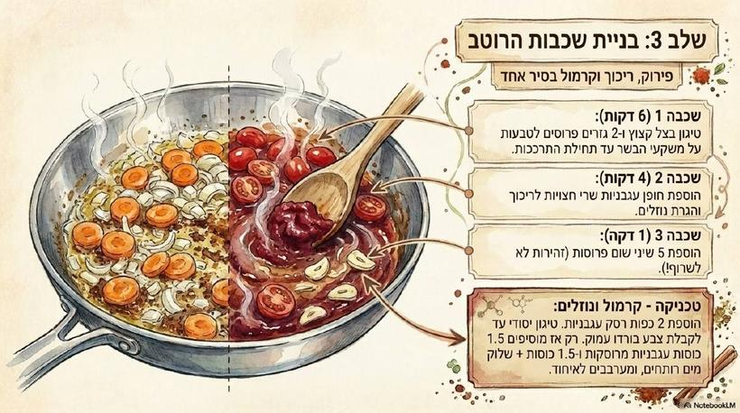
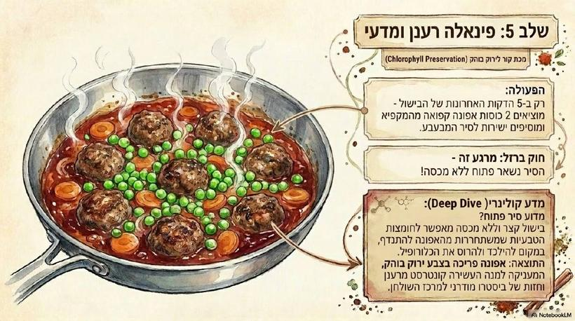
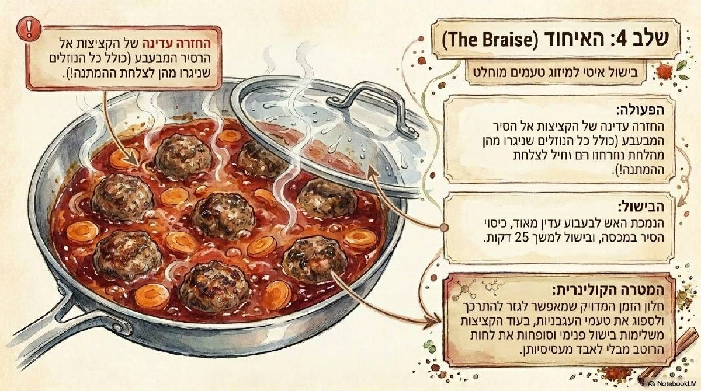
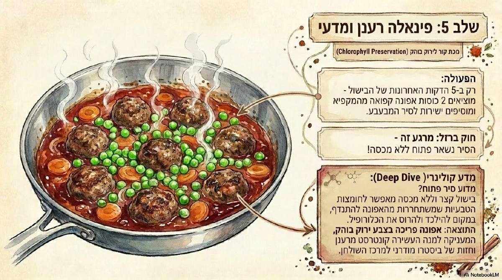

דיווח מ־12 באוגוסט, קציצות ברוטב עגבניות, אייפון 402 פיקסל
מה קורה בפועל. ברוחב טלפון כל עמוד נפרס לגובה 207 פיקסל בלבד, ולכן ארבעה עמודים נמצאים על המסך בו זמנית וחמישה נטענים יחד. חמישה עמודים בגודל מלא הם כ־15 מגה־בייט של תמונה מפוענחת, ושם iOS מפסיק באמצע ומצייר חצי עמוד.
למה זה לא תוקן מיד. ה"חלון" שמשחרר עמודים רחוקים כבר קיים, אבל הוא מודד מרחק ולא כמות — ברוחב טלפון כמעט כל המתכון נכנס לתוכו, אז הוא לא מגן על כלום. כל פתרון אמיתי משנה איך המתכון נראה, ולכן זו החלטה שלך.
חד לגמרי, אבל העמוד הריק יחזור מדי פעם במתכונים ארוכים.

4/6
6/6כך הזרימה נראית היום — שלושה עמודים ומשהו על מסך אחד.
820 פיקסל בזרימה, 1200 בזום. חוצה את הזיכרון, אבל זה מה שכבר ניסינו ואמרת שנראה רך מדי מול הזום.
הרכות כאן מוגזמת בכוונה כדי שתראה את הכיוון.
כל עמוד תופס כשני שליש מהמסך. רק שניים נטענים יחד, ובעיקר — אפשר לקרוא את זה מהשיש בלי להרים את הטלפון.

5/6
6/6אותה חדות כמו היום, פחות עמודים בו זמנית, גלילה ארוכה יותר.
ג׳. הוא היחיד שפותר גם את העמוד הריק וגם את הקריאוּת מהשיש, בלי לוותר על החדות שהחזרת בכוונה. המחיר היחיד הוא גלילה ארוכה יותר.